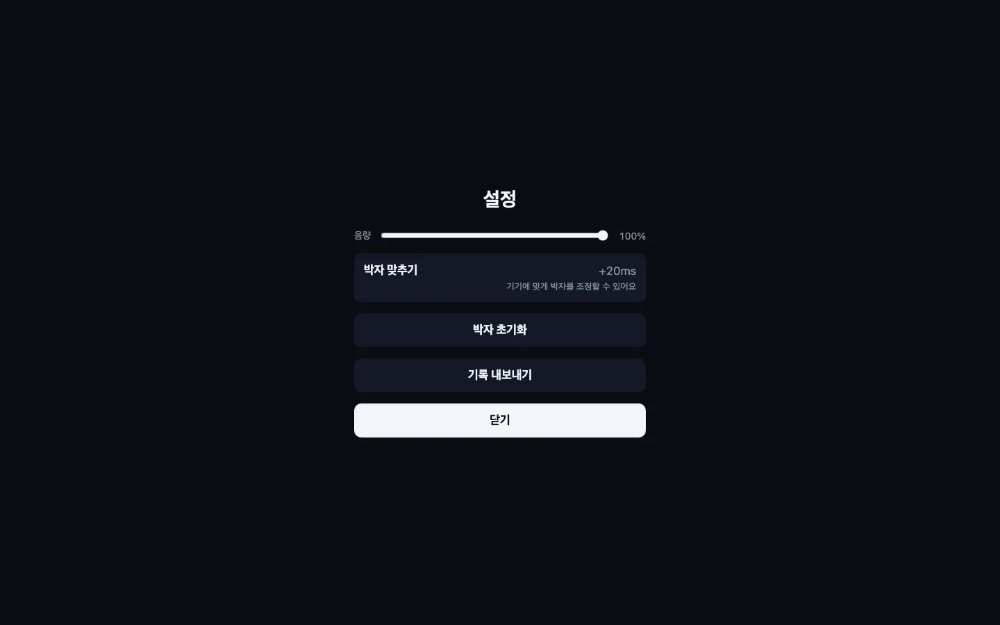
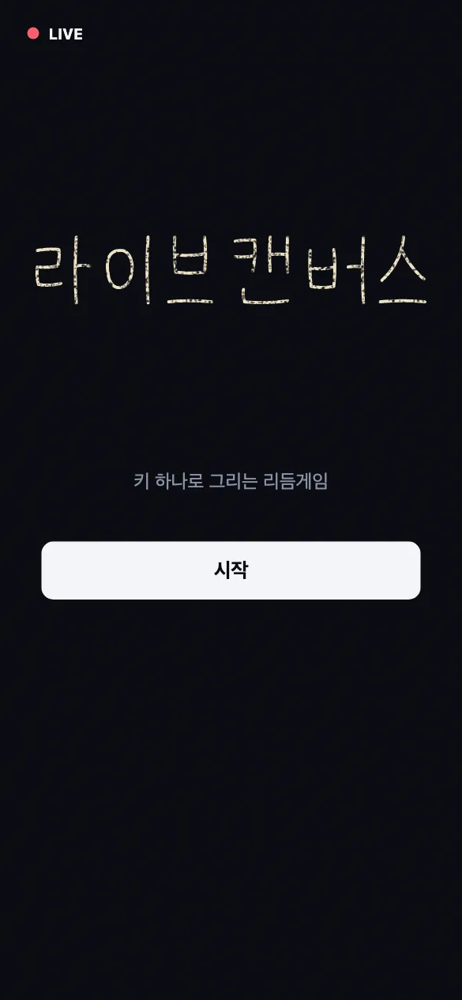

누를 건 키 하나
시작하면 곡 첫부분 리듬에 맞춘 딸깍 소리가 먼저 나와요. 크레파스 끝이 굵은 흰 고리에 닿는 순간 아무 키나 톡 누르면 돼요. 화면을 누르거나 터치해도 돼요!
시작하면 곡 첫부분 리듬에 맞춘 딸깍 소리가 먼저 나와요. 크레파스 끝이 굵은 흰 고리에 닿는 순간 아무 키나 톡 누르면 돼요. 화면을 누르거나 터치해도 돼요!

길 위의 노트는 점으로, 속도나 방향이 바뀌는 곳은 점과 고리로 보여요. 박자를 맞출 때마다 선이 한 칸씩 그어지고, 정확하게 맞출수록 선이 진하고 굵어져요. Miss가 쌓이면 화면 가장자리가 빨개지고, 계속 놓치면 게임 오버돼요!

길은 한 줄로 이어진 그림을 따라 나 있어요. 마지막 노트가 지나면 화면이 멀어지면서 내가 그린 그림과 최고 점수가 나타나요. 결과 화면에서 바로 다시 하거나 곡을 고를 수 있어요!


쿼카, 일각고래, 오리, 관람차처럼 곡마다 리듬에 잘 맞는 그림을 하나씩 골랐어요. 두 곡이 같은 그림을 쓰지 않아요!

Easy 34곡, Normal 39곡, Hard 36곡이 있어요. 노트 수와 엇박, 촘촘한 구간을 보고 난이도를 나눠요!
곡을 고르고 잠깐 기다리면 미리듣기가 나와요. 마음에 드는 곡을 귀로 골라요!

곡마다 다른 소리 크기는 알아서 맞춰 주고, 컴퓨터에서는 음량을 바꿀 수 있어요. 딸깍 소리를 따라 누르면 기기의 소리 지연도 맞춰 줘요!

설치 없이 브라우저에서 바로 열려요. 폰에서는 화면을 톡 누르면 돼요!

노래의 박자를 분석해서 길을 만들고, 그 길이 한붓그리기 그림 한 장이 되게 했어요. 처음에는 바느질 콘셉트였는데 크레파스 그림으로 바꿔서 완성했어요.